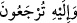
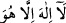

mahlûkâtın, işleri hususunda ahirette varacağı yer O’nun hükmüdür.
İbn Abbas (r.a.) der ki: Allah Teâlâ, tâat ehline mağfiretle; masiyet ve şakâvet ehline
de veyl ile hükmeder.
“Ve” öldükten sonra diriltilerek “ancak O’na döndürüleceksiniz.” Başkasına değil.
et-Te’vîlâtü’n-Necmiyye’de der ki: “ âyetinin anlamı şudur: İhtiyarî veya
zorunlu (ıztırârî) olarak O’na döndürüleceksiniz. İhtiyârî olarak Allah’a dönmek; seyru
sülûk, mütâbeat ve vusûl yolu ile Allah’ın huzûruna varmaktır. Bu sadece insana mahsus
bir özelliktir; başkasına değil. Zorunlu (ızdırârî) olarak Allah’a dönmek, rûhun
kabzedilmesi (vefâtı) iledir. Bu da haşr, neşr, hesab ve cezâdır; iyilik mükâfat ile,
masiyet azâb ile karşılık görür.
Denilir ki: Şu sekiz şey, bütün mahlûkat için genel ve umûmîdir: Ölüm, haşr, kitabını
okuma, mîzan, hesab, sırât, suâl ve cezâ.
Allah Teâlâ, Mûsâ (a.s.)’a şöyle vahyetti: “Ey Mûsâ! Benden zenginlik (ğınâ)
isteme; sen onu bulamazsın. Bütün mahlûkat bana muhtaçtır. Zengin (Ğanî) olan
Benim. Gaybı bilmeyi de benden isteme (onu bana sorma); zira onu benden başkası
bilemez. Halkın seninle ilgili onların dilini tutmamı da Benden isteme. Çünkü onları
ben yarattım, onları ben rızıklandırdım, onları ben öldürür ve yine ben diriltirim.
Onlar beni kötülükle anıyorlar; kendi hakkımda onların dillerini tutmuyorum; senin
hakkında da tutmam. Benden ebediliği (bakâ) de isteme. Çünkü onu bulamazsın. Bakî
ve dâim olan Benim.”
Allah Teâlâ Muhammed (a.s.)’a da vahyedip dedi ki: “Ey Muhammed! Dilediğini
sev; ondan ayrılacaksın. Dilediğini yap; yarın onunla karşılaşacaksın; Dilediğin
kadar yaşa; öleceksin.”[135]
Böylece ortaya çıkmış oldu ki, nâfiz hüküm Allah Teâlâ’nın elindedir. Bundan
mahlûkâtın elinde bir şey olsaydı, ölümü kendilerinden uzaklaştırırlar ve mahşerde
işledikleri amelleriyle karşılaşmak istemezler ve onu uzaklaştırırlardı. Kurtuluşa giden
yol; ihtiyârî olarak teslim olup rızâ göstermek ve Allah’a dönmektir. Çünkü kul
isteyerek Allah’a dönerse, onun yanında herhangi bir şiddet ve sıkıntı ile karşılaşmaz.
Izdırarî (zorunlu) olarak dönmek ise, böyle değildir.
Cezalandırılmadan önce, af kapısını çal
Çünkü sopanın altında iken feryâd etmenin bir faydası yok
Allah’a dönmenin alâmetleri; kulun gizli ve âşikâr, görünen ve görünmeyen hâllerini
ıslâh etmek ve her hâlinde Allah’a hamdetmektir. Çünkü endişe, korku ve ızdırab işin
başında cehâletten kaynaklanır. Belâ acısını hafifleten şeyse, seni mübtelâ kılanın Allah
olduğunu bilmendir.
Sıkıntı ve genişlik hallerinde “ (lâ ilâhe illâ hû)” de. Tevhîd; tâatlerin en
üstünü, zikir ve hasenelerin de en hayırlısıdır. Onun mücerred sûreti insanı kurtarır,
mânâsı nasıl olur? Artık onu sen düşün!